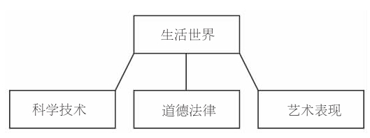
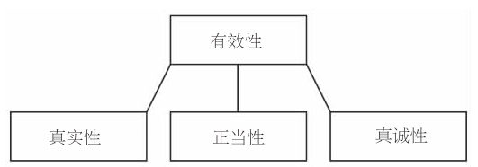

哈贝马斯哲学既有系统性，也有历史性。通过对黑格尔、马克思和阐释哲学的研究，哈贝马斯意识到社会理论的目标和原理都有自己的历史。正如尼采曾经说过：“只有不存在历史的事物才可加以定义。”社会有历史，所以无法定义，但这不等于说无法阐释社会，只是必须结合社会历史来阐释社会。哈贝马斯的哲学以一种风格（虽然这种风格有可能激怒历史学家）阐释了社会。到目前为止，我还没有谈及以下事实：哈贝马斯的社会理论诊断、批判了社会生活的现代 形式，商谈伦理学则论证、阐述了现代 道德观。现在，该重点探讨关于现代性和现代化的理论了，这有助于看清哈贝马斯社会理论隐含的道德之维。通过解释道德观和现代性的密切交织关系，可以揭示殖民化的有害社会作用为什么会对共同体的道德伦理产生影响。
在某种程度上，现代性标明了一个在时间上有起始点的时间段（或者是同某个时间段有密切关联的一套观念）。至于这个阶段是否已经成为过去，或者还在展开；假如这个阶段已经过去，我们是否应该额手相庆，欢送它的离去——这些都是在20世纪80年代《交往行为理论》出版之时极有争议的问题。（令人高兴的是，现代性被当做一个亟待解决的重大问题的阶段看来已经结束了。）然而，现代性不仅是一个时期，它还标明了同社会、政治、文化、制度、心理学有关并产生于特定历史进程的情境。
在这个意义上，现代性同“现代主义”这个标签之下的各种艺术作品和艺术风格有关，但与此又相区别。作为一个艺术家，是否接受“现代主义”是一种自我选择，但现代性不是这么回事。你可以选择（或者拒绝）现代主义，但现代性注定选择你。像我这样讨论哈贝马斯关于现代性的“理论”是合乎理性的做法，但是，这类讨论不像商谈伦理那样是一个独立的专题，而是被引入各类研究之中的观点和假设的一个集合。
粗略来讲，关于现代性的理论可以分成两个部分。在该理论中，关于西方社会从中世纪末到20世纪晚期发展的历史叙事非常宏富，其中尤为重要的是该时期中世俗道德观从基督教传统中诞生这一次级情节。另外，哈贝马斯对社会发展的内在逻辑进行了高屋建瓴式的重构，建立了关于社会进化的理论。让我们依次来解读这两方面。
现代化以及价值领域的分化
我们已经看到了哈贝马斯关于现代社会起源和本质的一些观点。根据哈贝马斯的描述，现代化是一个包含了各个相关发展阶段的过程，有些过程我们早已经历。首先，知识，尤其是自然科学知识，从17世纪起经历了巨量的增长。中世纪科学通过零星的观察把一些想当然的属性归给各类物质，这些不可信的方法主要建立在亚里士多德的权威之上。后来这种方法逐渐让位于两种新方法。一种是结合了精确测量技术和数学理论结构的更系统化的方法，另一种是用公式表达、验证预测性假说的新方法。这些新科学成功兴起并占有了一个显赫位置，由此导致（历经几个世纪，并同其他因素相结合）的结果就是亚里士多德传统的没落、教会权威的削弱，直至自然科学与理性的认知权威最终取代了前两者。哈贝马斯（作为马克斯·韦伯的追随者）认为，在这一转折过程中，有技术价值的知识的巨量增长导致了三个区别明显的价值领域的分化：

图11 三个价值领域
出现三个截然不同的价值领域不足为怪，因为这三个价值领域的分化紧随认知和实践权威从宗教传统向有效性变迁这一过程，而根据哈贝马斯的意见，存在着三种截然不同的有效性。

图12 三种有效性维度
这三种有效性依次同理论领域、道德领域以及审美领域（见第三章，图10）三个商谈领域一一对应。这就是说，当宗教世界观随着理性化过程而倾塌时，所遗留的问题转入了自然科学、道德观/法律、艺术这三个知识领域中的某一个，并在其中得到了解决。学习过程持续着，知识在深化，但是自此只在一个领域中进行。由此导致了双重的后果。现代性带来了专门知识在数量和深度上的巨大增长，但是这种知识在同一个过程中变成脱离了日常生活之本的无根之木，自由漂离于“在对日常生活的阐释中自然发展的传统之流”（《现代性：一项未竟的事业》，第43页）。存在于人类的知识和生存之间的裂痕扩大了。
现代性：未竟的事业
1980年，在领受阿多诺奖时，哈贝马斯题为“现代性：一项未竟的事业”的演讲引起了震动。演讲之所以造成群情激愤，是由于哈贝马斯惹眼地与当时汹涌的后现代主义思潮唱反调，而后者急于告别现代性和与此相伴的整个启蒙事业。哈贝马斯演讲的题目内含两个意思：其一，现代性是一项事业 ，而非一个历史阶段；其二，这项事业还没有（但是可以而且应该）完成。
哈贝马斯称现代性为事业 是因为他视之为一种文化运动，这个文化运动产生于对上述现代化进程所带来的具体问题的回应。其中主要的问题便是，要找到一种方法将启蒙进程中产生的专门知识与常识和日常生活过程重新联结，将这种专门知识与生活世界和公共利益重新联结，以此来永久利用其潜能。这样一种现代性概念将哈贝马斯所称的“后形而上学”哲学放置到了现代生活及其所发出挑战的中心地带，而在哈贝马斯看来，“后形而上学”哲学的任务就是要替代并阐释专门化的科学学科。（值得再次提及的是，霍克海默和阿多诺的批判理论概念关注的是同一对矛盾，即技术性知识的增长和缺乏有价值的社会生活形式这两方面之间的矛盾。）
哈贝马斯之所以称此现代性为“未竟的”事业，是因为现代性所面临的问题仍然没有解决，因为哈贝马斯认为阻止、逆转现代化进程的企图是徒劳之举，还因为哈贝马斯认为现代性和现代化的替代性方案更不尽人意。这些糟糕的方案之一就是反现代性。反现代性的思想，比如阿拉斯代尔·麦金太尔（1929—）的社群主义，曾经通过某篇文章主张复兴托马斯主义传统的美德观；马丁·海德格尔的晚期著作看起来主张回归更具田园特点的传统生活。实际上这些方案不过是以不同的方式装扮了退回到前现代生活方式的企图。另外一个糟糕的替代性方案就是后现代主义。哈贝马斯料想，这样随意地鼓吹现代性的终结等于将启蒙运动的婴儿（人文主义理想）连同洗澡水（工具理性的滋长和对科学技术发展造福社会的信仰）一同泼了出去。他对于所有形式的相对主义和语境主义都保持高度警惕，并将它们同非理性主义混同起来，这也许能够解释在《现代性的哲学话语》一书中，他针对后现代主义的批评，这些批评在事后看来显得过于激烈。那时，从法国传来的后现代哲学正受追捧，哈贝马斯担忧它会成为特洛伊木马，导致非理性主义在德国的复活。
哈贝马斯坚信，我们绝不能牺牲现代性所带来的成果——知识增长，经济利益，还有个人自由的拓展。完成现代性不仅仅是接受现代性施舍给我们的每一个新生事物；它还意味着根据世俗的人文主义理想批判地适用现代社会文化的、技术的、经济的潜能。这不是轻而易举的事，这个任务首先要求“社会的现代化可以向其他 非资本主义方向发展”（《现代性：一项未竟的事业》，第51页）。完成现代性要求生活世界在面对系统的侵蚀力量时能得到有效的保护，同时正如上一章我们看到的，现在仍然没有哪个人或哪种力量堪此重任。
世俗道德的浮现
根据哈贝马斯的历史分析，现代化把主体从传统角色和价值中解放了出来，同时又造成他们愈加依赖交流和商谈来协调行为、制定社会秩序。我把他的总结性观点称为现代性命题。
（《现代性的哲学话语：十二讲》，第7页）
这里所谓的“规范性”指从成功的商谈中产生的共享的意义和理解。由于这些意义和理解是从交流和商谈中产生的，所以是自我生成的；在这个意义上，行为人和商谈的参与者决定了规范性。规范性同时又是合理的，因为规范性的基础是对有效性声称的相互承认。
这个一般性叙述中有一个次要的方面对商谈伦理这个论题极其重要。它关乎世俗道德观从一神论的犹太-基督教传统中产生。哈贝马斯认为该传统包含了关于客观善和符合正义的生活的观念，根据这种观念，每一个人所面临的道德问题——“我应该做什么”——都能得到解答。
在转向现代性的历史时刻，关于善的具体而且实质的问题逐渐脱离关于正义和道德正当性的形式性发问，同时基于一元且同质的宗教传统的伦理被百家争鸣的善观念所取代。道德观逐渐由道德律令的集合转变为原则和有效规范所组成的体系。现代道德观的有效规范有两个特征：普遍性和无条件性。哈贝马斯认为这些特征是犹太-基督教传统的遗产；然而，道德规范具有历史并不意味着道德规范只是旧纪元的遗产。道德观继续存在于现代性中是因为道德观仍然有其意义，能够有助于解决争端，有助于改造并且维持社会秩序。
到此为止，哈贝马斯一直都在细述可被称为“真实存在的道德观”的历史。与道德观发展相平行的是道德理论的历史，它探究的是道德观念的变化以及这些观念的理论表述。哈贝马斯认为康德是第一个道德理论家，他的理论反映了现代道德观念。康德关于绝对命令的首次表述，即“普遍法则公式”，将道德权威的来源定位于普遍化的形式标准，而非实质性的准则和义务。借助普遍化的形式标准，道德原则被融入了意志。
意欲某个准则成为法则是一种自由的行为，因此康德将道德行为当做意志自由的表达。哈贝马斯赞赏康德将道德观从实质善的观念中解放出来，并将道德观重新视为检验规范的程序，但是，哈贝马斯又批评他的一个假设，即每一个单独的个体都通过将绝对命令运用于某个准则来为自己确立一种道德规范的有效性，仿佛这是一种道德的脑力运算。在哈贝马斯看来，康德将道德推论视同独白式 的过程，从而忽略了道德推论的社会性。与此相对，道德商谈理论，正如托马斯·麦卡锡所言，则将道德观念视为一种集体的、辨证的 达成共识的过程：
（《道德意识与交往行为》，第67页）
哈贝马斯的商谈伦理学发展了一种现代的、康德式的道德观，商谈的理想或规则引导着其内在逻辑。
哈贝马斯还提出了一种关于社会进化的理论，该理论表现为一个极难论证的假设：从个人身上体现的发展性学习过程在合适的条件下可以被导入整个社会。换言之，关于社会世界的目的论观点，即总体来看社会是朝特定方向发展的这一观点，可以部分地加以采纳，前提是能够证明这个关于个人和社会之间学习过程的类比。
劳伦斯·科尔伯格的道德发展理论
维系这个类比的是劳伦斯·科尔伯格的儿童道德发展理论。科尔伯格（1927—1987），发展心理学家，认为主体道德能力的发展经历了三个不同层次，即前习俗层次，习俗层次，后习俗层次；每个层次又可以分成两个阶段。这个关于层次和阶段的结构被假定为“自然的”，因为它在文化中随处可见，可以部分地加以经验式证实。
科尔伯格的儿童道德发展理论
第一层次：前习俗道德观
在这一层次，儿童对于好坏、对错的评价能作出反应，但他们凭借自身行为的经验性后果来理解好坏对错的标准。
第一阶段： 通过惩罚与服从来理解道德，道德就是不伤害别人。
第二阶段： 道德被当做满足自己利益的手段，对他人的同样行为听之任之。
第二层次：习俗道德观
在这一层次，达到家庭的期望值是重要的，不管后果如何。典型的态度就是适应并且忠诚于社会秩序。
第三阶段： 道德就是扮演好孩子的角色。做好孩子就要遵守规定，满足别人对自己的期望，表现出对他人的关心。
第四阶段： 道德意味着履行自己的义务，维持社会秩序，维护社会或群体的利益。
第三层次：后习俗道德观
第三层的道德观以在道德规范的有效性与群体或个人赋予这些道德规范的权威性之间作出区分的能力为标志。有效性不以个人对群体的认同为依据。道德主张反映了社会所有个别成员都认可或者能够认可的价值或原则，因为这些价值或原则体现了共同善。
第五阶段： 道德观被视为社会的基本权利、价值以及合法契约，甚至当它们同群体的具体规则和法律相冲突时也是如此。在与群体相关的价值和规范，以及与群体无关的、不管主流观念如何必须受到保护的普遍价值和规范之间，主体可以作出区分。法律和义务可以建立在对整体效用的计算之上。
第六阶段 ：道德观被当做任何与普遍的、自我选择的道德原则一致的观念。在此阶段，人们选择遵守道德的原因在于：作为理性的人，人们能洞察基本原则的有效性，并且愿意承担这些原则带来的义务。有效性是由基本原则赋予准则或行为的。当某些准则或行为同原则冲突时，人们就以原则为行动依据。正义的普遍原则、平等以及对所有人尊严的尊重就是例子。
科尔伯格认为每个层次和阶段都属于学习过程，每个层次或阶段都要优于前一个层次或阶段，因为它变得更为复杂。每一个新层次都保持并提升了前一层次解决问题的能力，所以在每个新的层次中主体都力图更成功地解决道德问题和道德困境。因而，一旦道德主体实现了向较高层次道德意识的跃迁，他们在一般情况下便倾向于选择更高的道德意识层次而非较低的道德层次。
这个理论由经验式的假设和道德哲学组成，其中某些心理学命题，比如行为人倾向于选择更高层次而非较低层次的解决方案，是可以由经验性资料加以检验和证明的。然而，关于第六阶段较第五阶段更具理论优越性（康德式道德观优于功利主义）的断言则应该由哲学论证得来。经验性论据与哲学论证的相互支持被视为该理论之正确性的附带证据。
科尔伯格的理论遭到了严厉的抨击。例如功利主义者反感自己被置于永远屈居于康德主义者之下的位置，他们否认功利主义对于道德问题的解决方案“本质上”或在哲学论证上不如康德主义。同时，很多女性主义者声称，道德观中有别具女性特征的一点，即谨慎，而这一点的伦理意义却被科尔伯格出于各种理由贬低或忽略了。科尔伯格给男性提倡的“合理的”道德解决方案以优先权，无视女性提出的替代性方案，并错误地从关于男性道德发展的证据中推导出了一个关于儿童道德发展的命题。尽管存在着此类争议，哈贝马斯还是继承了科尔伯格的理论，只不过对此作了一处细微的改变。正如哈贝马斯对于世俗道德产生的历史说明并没有以康德主义收尾，而是以道德的商谈理论作了总结，哈贝马斯在科尔伯格理论的第六阶段中融入了自己的道德商谈理论（《道德意识与交往行为》，第166—167页）。吹毛求疵的人看到这里可能要怀疑性地耸耸眉了。哈贝马斯叙述的现代道德的历史发展，以及他重新诠释的道德心理学的发展，两者最终导向商谈理论，这看起来真是过于巧合了。
社会进化和现代化
哈贝马斯有一个宏伟的理论设想：既然个人的道德意识发展是一个在理论上可分成不同逻辑阶段的学习过程，那么整个社会的发展也可以相应地分成不同的阶段。毕竟，如果上述阶段和层次自然存在于个人的道德发展中，它在社会结构中就该有所反应。社会的进化过程中应该有前习俗社会、习俗社会、后习俗社会三种类型。哈贝马斯认为，可以从群体的不同历史形式中发现所有这些层次。主要建立在血缘关系和共同宗教传统之上的社群是习俗社会的类型，在这样的社群中道德标准由宗教、部落首领决定；建立在普遍的道德观和合理的法律基础之上的现代社会则属于后习俗类型。个人道德意识的第二和第三层次结构的社会类比代表了人类用于解决问题的共同规则。如果哈贝马斯的假设正确无误，现代化进程就可以被重构为日益复杂的社会结构的发展过程，这一过程使得个人解决行为问题和社会冲突的能力得到了加强。
然而，哈贝马斯的理论假设面临着几个严峻的挑战。例如，何种经验性论据有可能证实或推翻这个假设这一点尚无定论。另外一个问题则挑战了所谓个体的演化和种系的演化（个体和集体的学习过程）之间的类比。个体的行为是否与集体的行为有相似之处，这一点仍然不清楚。在科尔伯格的理论中，学习者是谁至少是清楚的，那就是作为个体的儿童。儿童有一种控制性意识，这种意识与集体层面的意识并无相似之处。作为整体的社会是如何学习的？哈贝马斯承认，所谓社会学习是一种派生意义上的说法，指社会为个人学习处理冲突、解决问题提供了框架。所以称从习俗社会到后习俗社会的转变为“学习过程”，这是在极弱意义上而言的。
哈贝马斯在20世纪70年代对历史唯物主义从事批判性研究时产生了这个恢弘的构想。他关于规范性社会结构发展的理论被视为补充了马克思主义的一个观点，即社会发展由生产力的变革自下而上决定。从那时起，虽然哈贝马斯依然在自己的其他理论研究中采纳了进化理论的一些核心观点和假设，但却悄悄放弃了进化理论的大部分内容。他没有抛掉的是一个信念，即行为人如果通过交流的方式来采取行动、通过商谈的方式来解决争端，能够更好地应付现代社会生活中的冲突和复杂性。
哈贝马斯的批评者常抱怨说他的著作无历史性可言。他只是从历史中翻检能作为自己理论研究之佐证的史料。例如，他说道德普遍主义是历史的结果，但是他还想论证尽管如此道德普遍主义还是比它之前的道德观有所进步 。对于哈贝马斯来说，社会向交往和商谈走得越近，即社会中人越以共识为目标，对于他们个人和集体的益处就越大。在哈贝马斯的批评者听来，这论调太熟悉了，让人回想起黑格尔关于“历史理性”的声名狼藉的观点。
这些怀疑不无可取之处，但也并非如这些批评者说得那么在理。哈贝马斯并不认为现代事业中的主导政治、道德观点同它们产生于其中的特定文化背景有关联，即便这些观点诞生于特定的历史时期。哈贝马斯确实为社会进步的观点提供了像样的辩护。他认为，可以给社会进步的观点提供一种具有经验合理性（和形而上学崇高性）的阐释：社会发展可被看做一个学习过程，现代社会中的后习俗社会主体比前现代社会中的习俗社会主体和前习俗社会主体能更好地协调行动、维护社会秩序。但是尽管如此，哈贝马斯远非天真的乐观主义者。他摒弃了黑格尔的目的论社会观，认为这种观点把社会视做以自我了解为方向的自我发展精神的客体化形式。按他的描述，现代化对系统、生活世界和两者之间脆弱平衡的影响是多样化的，现代化的遗产也是含义未明的。在其资产负债表的债务栏中，现代化造成了种种社会病理——社会分裂、漂泊无根和异化感。在其收益栏，现代性在认知、经济、政治等方面带来了值得维持的收益。
哈贝马斯坚持认为，试图阻止或者逆转现代化终将是徒劳，逆转历史进程不像轻触开关那么简单。这不是说人类的活动对于社会就没有影响，而是说要顺应现代性的潮流，而不是逆现代性而动，因为现代化提供了可用来解决其问题、包容其危害的资源。归根结底，完成现代性事业就意味着找到途径和方法来减轻伴随着进入后习俗社会过程的阵痛；在后习俗社会中，主体在普遍的道德原则和正当法律的基础之上协调他们的行为并建立社会秩序。要想更详细地理解这一点，我们必须转而探讨哈贝马斯的道德和政治理论。